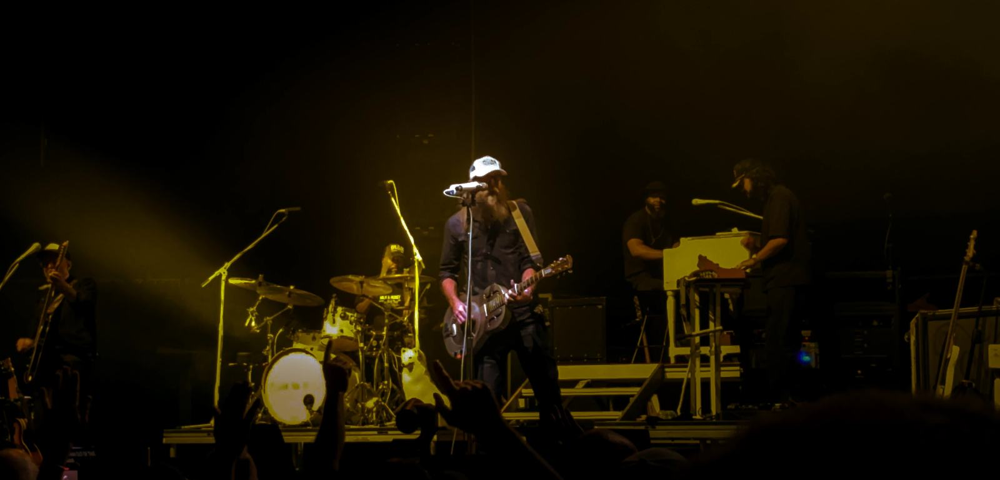
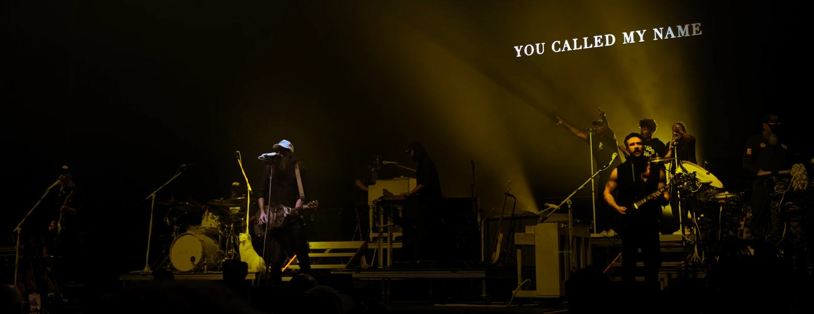
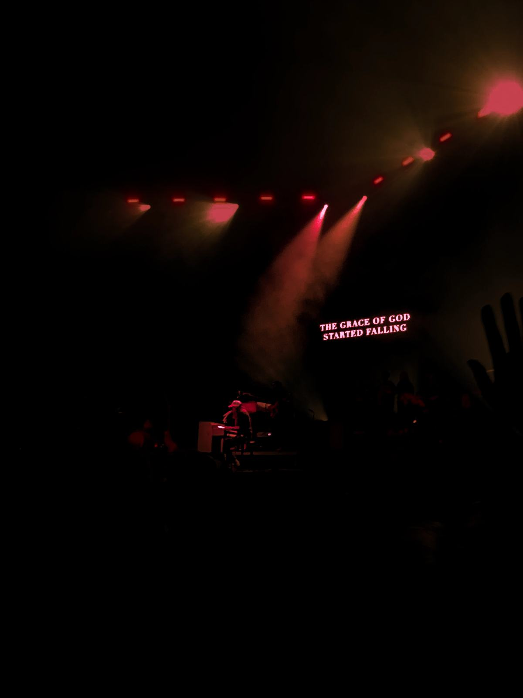
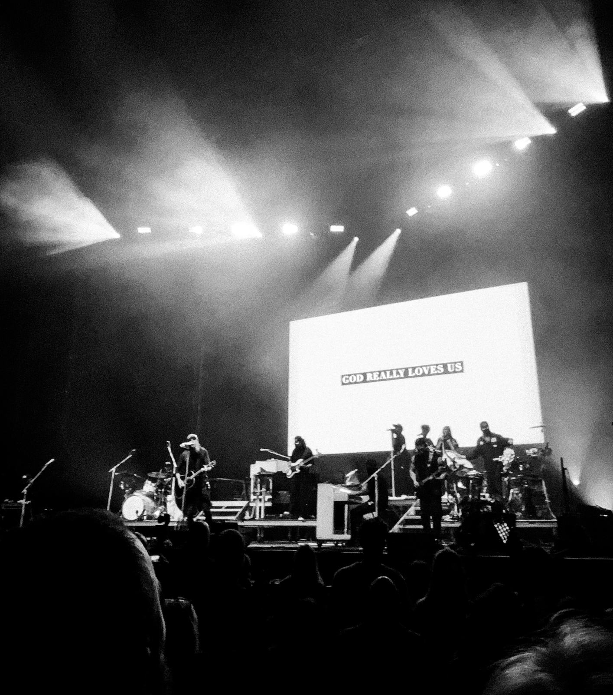

Archive / Live photography / No. 04
Crowder

File No. 04
Crowder Live
- Client
- Crowder · concert
- My role
- Photography and editing
- Year
- 2026
- Tools
- Lightroom, Photoshop
Concert photography of Crowder.
The series follows the show's lighting changes: amber, red, blue and a black-and-white ending.
The lyrics projected on screen stay inside the frame and become part of the photo.
22photos
4lighting moods
B&Wfinale









